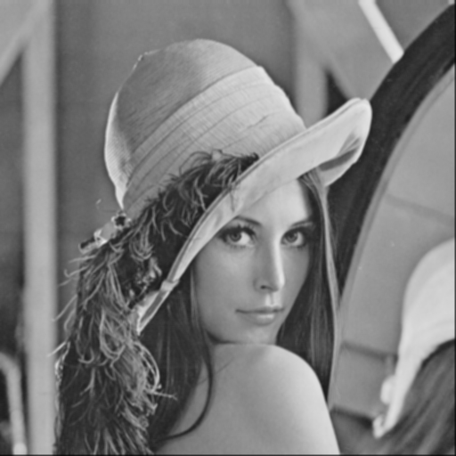
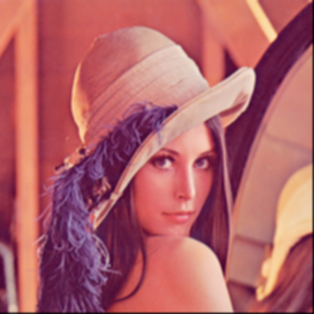
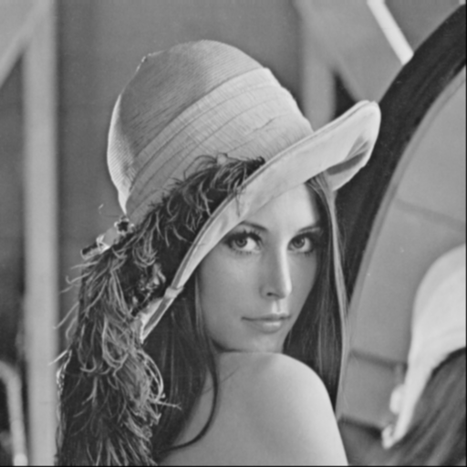
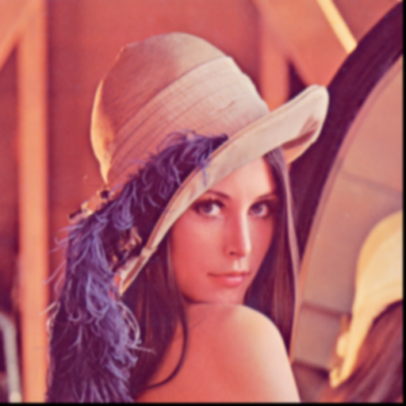
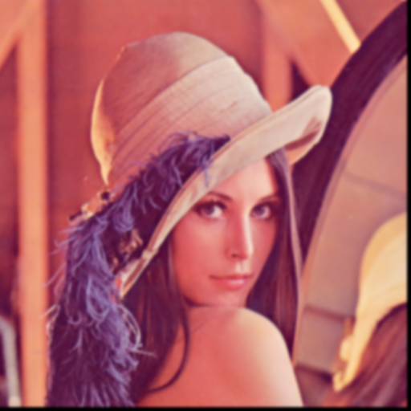
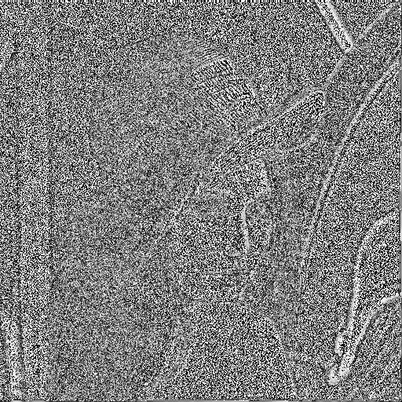
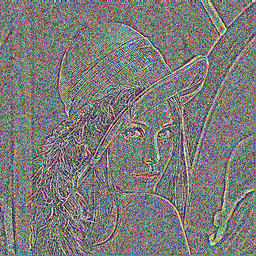
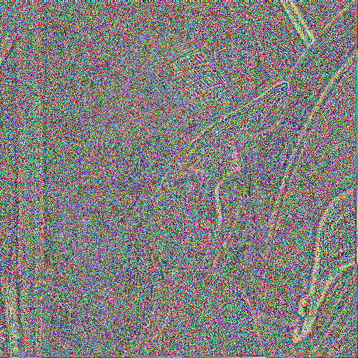

| Imagen/Filtro | Original | 3x3 | 5x5 | 7x7 | 9x9 | 11x11 | 13x13 | 15x15 | 17x17 | 19x19 | 21x21 | 23x23 | 25x25 |
|---|---|---|---|---|---|---|---|---|---|---|---|---|---|
| Box Grayscale | |
 | |
|
|||||||||
| Box RGB | |
 | |
||||||||||
| Bartlett Grayscale | |
 | |||||||||||
| Bartlett RGB | |
||||||||||||
| Gaussian Grayscale | |
||||||||||||
| Gaussian RGB | |
 |  | |
|||||||||
| Laplacian Grayscale | |
 | |||||||||||
| Laplacian RGB | |
 |  |